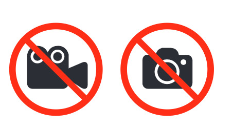
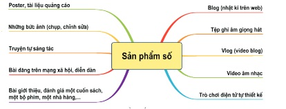

Dành cho giáo viên
Theo dõi lớp
| Học sinh / Nhóm | Đã nộp | Cập nhật |
|---|
Bước 1
1 Khởi động
Khởi động An nên làm theo cách nào?
Khoa chia sẻ cho An bức ảnh ruộng bậc thang mà mình đã chụp.
Trường hợp 1: An không hỏi ý kiến Khoa, tự mình chỉnh sửa bức ảnh và sử dụng làm nền cho ảnh của mình rồi đưa lên trang cá nhân trên mạng xã hội. An viết chú thích cho bức ảnh: Thật tuyệt khi được đến thăm nơi này.
Trường hợp 2: An xin phép Khoa, chỉnh sửa lại bức ảnh cho đẹp hơn rồi đưa lên trang cá nhân trên mạng xã hội. An viết chú thích cho bức ảnh: Đất nước ta thật là đẹp (người chụp Lê Khoa).
Trường hợp 1: An không hỏi ý kiến Khoa, tự mình chỉnh sửa bức ảnh và sử dụng làm nền cho ảnh của mình rồi đưa lên trang cá nhân trên mạng xã hội. An viết chú thích cho bức ảnh: Thật tuyệt khi được đến thăm nơi này.
Trường hợp 2: An xin phép Khoa, chỉnh sửa lại bức ảnh cho đẹp hơn rồi đưa lên trang cá nhân trên mạng xã hội. An viết chú thích cho bức ảnh: Đất nước ta thật là đẹp (người chụp Lê Khoa).
Ghi bài Khởi động
Sau khi thầy cô chốt, em chép nội dung dưới đây vào vở.
Bước 2 · Hình thành kiến thức mới
2.1 Biểu hiện vi phạm khi sử dụng công nghệ kĩ thuật số
Hoạt động 1 Biểu hiện nào là vi phạm?
Mỗi bạn tự nghĩ trước, sau đó cả nhóm thảo luận, thống nhất.
Đọc hiểu Một số biểu hiện vi phạm
Đọc mục 1 (SGK trang 18–19). Công nghệ kĩ thuật số mang đến cho em rất nhiều lợi ích nhưng cũng tiềm ẩn những vấn nạn nhất định: những biểu hiện thiếu văn hoá, vi phạm đạo đức hoặc thậm chí vi phạm pháp luật của người sử dụng hay người tạo ra những nội dung số. Ví dụ: quay phim trong rạp chiếu phim; chụp ảnh ở nơi không cho phép (Hình 4.1); ghi âm trái phép các cuộc nói chuyện; tải về máy tính các tệp bài hát, video có bản quyền mà chưa được phép; sao chép thông tin từ một trang web và coi đó là của mình; sử dụng phần mềm bẻ khoá; phát trực tiếp (livestream) hoặc chia sẻ các vụ bạo lực học đường; đưa lên mạng thông tin cá nhân của người khác mà chưa được phép; tham gia, chia sẻ, quảng cáo cho các trang web cổ vũ bạo lực, đánh bạc,… Em cần tìm hiểu thông tin, trang bị cho mình những hiểu biết, những kiến thức pháp luật (Hình 4.2).

Câu hỏi SGK trang 19
Ghi bài 1. Biểu hiện vi phạm
Sau khi thầy cô chốt, em chép nội dung dưới đây vào vở.
Bước 2 · Hình thành kiến thức mới
2.2 Tuân thủ những quy định về đạo đức, văn hoá và pháp luật khi tạo ra sản phẩm số
Đọc hiểu Những điều cần chú ý khi tạo sản phẩm số
Đọc mục 2 (SGK trang 19–20). Có nhiều dạng sản phẩm số mà em có thể tạo ra (Hình 4.3). Để bảo đảm sản phẩm số thể hiện được đạo đức, tính văn hoá và không vi phạm pháp luật, em cần chú ý:
- Luôn trung thực trong quá trình tạo ra sản phẩm số: không sử dụng thông tin giả, thông tin không đáng tin cậy; không sao chép, chỉnh sửa thông tin của người khác rồi coi đó là của mình. Nếu An làm theo trường hợp 1 thì việc làm đó không trung thực.
- Nên sử dụng thông tin do mình tự tạo (tự quay video, chụp ảnh, viết nội dung,…), không sử dụng các thông tin có bản quyền nếu chưa mua hoặc chưa xin phép.
- Nội dung và hình thức của sản phẩm không vi phạm các quy định, chuẩn mực về đạo đức, văn hoá: dùng ngôn ngữ lịch sự, không dùng hình ảnh giật gân, không tiết lộ thông tin cá nhân của người khác,…

Câu hỏi SGK trang 20
Em có cảnh báo và lời khuyên gì với bạn trong mỗi tình huống dưới đây?
Ghi bài 2. Tạo sản phẩm số đúng quy định
Sau khi thầy cô chốt, em chép nội dung dưới đây vào vở.
Bước 3
3 Luyện tập
Luyện tập Bài tập SGK trang 20
Ghi bài Luyện tập
Sau khi thầy cô chốt, em chép nội dung dưới đây vào vở.
Bước 4
4 Vận dụng
Vận dụng Sản phẩm số hướng dẫn các bạn
Ghi bài Vận dụng
Sau khi thầy cô chốt, em chép nội dung dưới đây vào vở.